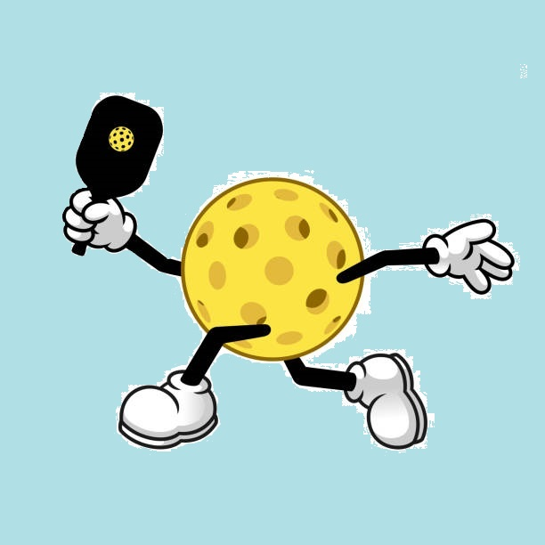

Coaching Philosophy
My goal in each session with a client is to do everything possible to ensure real progress and have fun along the way.
The first step is always to discuss with the client areas they feel are growth opportunities, and from here I build a plan for the lesson which I review with the client before beginning.
In the interests of injury prevention and maximizing performance, we start with a dynamic warmup before doing “the foundations“, a series of simple drills that I recommend every player do before starting gameplay.
A typical lesson will focus on four or five different shots. If necessary, we will deconstruct the shot and build from the ground level upwards, making sure that the mechanics are solid. From here we will simulate matchplay scenarios and a chance to drill the shot with many repetitions, while also working on posture, footwork, and hitting targets.
With couples and groups, it is still possible to focus on technique and mechanics, but they will be naturally more time spent on matchplay scenarios and strategy.
As with my classroom lessons, I feel it’s important to end each lesson with a review and reflection, and I encourage everyone I work with to avoid thinking too much the next time they hit the courts, and to allow the repetitions and technical work we did to naturally emerge as they play without stress.

Copyright 2023